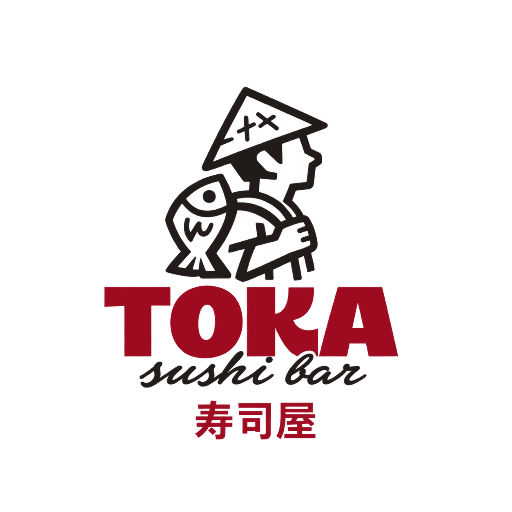
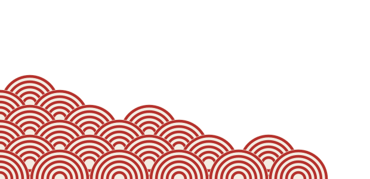

Toka Roll
Empanizado con Philadelphia, aguacate, tocino, res, pollo, camarón y surimi, gratinado con tampico.
$210
Rollos, arroces, aguachiles y mixología de la casa. Sushi con el sazón del Pacífico.

Los favoritos que nuestros clientes piden una y otra vez. Hechos al momento.
Empanizado con Philadelphia, aguacate, tocino, res, pollo, camarón y surimi, gratinado con tampico.
$210Forrado de salmón, con topping de camarón picosito y anguila.
desde $195Camarón y Philadelphia por dentro, forrado con salmón, atún, aguacate y kanikama.
$220Camarones curtidos en salsa negra, roja o verde, con pepino y flor de aguacate.
$239Av. Ejemplo #123,
Col. Centro, Ciudad
Lun – Jue · 1:00 – 10:00 pm
Vie – Dom · 1:00 – 11:30 pm
@tokasushibar